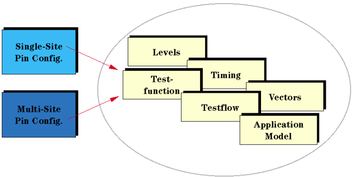

Overview
Due to the efficient architecture of the V93000, changing from a single-site setup to a multisite setup is quick and easy. The only thing which has to be added is the pin configuration of the additional sites.

After the pin configuration has been adapted, you use the Site Control window to specify which sites will be tested and for which sites the results will be shown.
The following sections take a detailed look at the steps required.
Functional changes
- Introduced before SmarTest 6.3.2